가스기사 (2011-03-20 기출문제)
1과목: 가스유체역학
1. 압력강하 △P, 밀도 ρ, 길이 ℓ, 체적유량 Q에서 얻을 수 있는 무차원 수는?
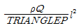
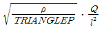
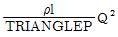
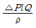
(정답률: 60%)

2. 펌프(pump)란 액체에 에너지를 주어 이것을 저압부(또는 낮은 곳)에서 고압부(또는 높은 곳)로 송출하는 기계이다. 다음 중 터보형 펌프의 종류가 아닌 것은?
- 피스톤 펌프
- 벌류트 펌프
- 터빈 펌프
- 사류 펌프
(정답률: 68%)
3. 유동하는 물의 속도가 12m/s이고, 압력이 1.1㎏f/cm2이다. 이 경우에 속도수두와 압력수두는 각각 약 몇 m인가? (단, 물의 밀도는 102㎏f·s2/m4이다.)
- 10.6, 11.0
- 7.35, 11.0
- 7.35, 10.6
- 10.6, 10.6
(정답률: 64%)
4. 유체 속에 잠겨진 경사면에 작용하는 전압력의 작용점은?
- 면의 도심보다 위에 있다.
- 면의 도심에 있다.
- 면의 도심보다 아래에 있다.
- 면의 도심과는 상관없다.
(정답률: 65%)
5. 유량 Q, 관의 길이 L, 직경 D, 동점성계수 υ가 주어졌을 때 손실수두 hf를 구하는 순서로 옳은 것은? (단, f는 마찰계수, Re는 Reynold 수, V는 속도이다.)
- Moody 선도에서 f를 가정한 후 Re를 계산하고 hf를 구한다.
- hf를 가정하고 f를 구해 확인한 후 Moody 선도에서 Re로 검증한다.
- Re를 계산하고 Moody 선도에서 f를 구한 후 hf를 구한다.
- Re를 가정하고 V를 계산하고 Moody 선도에서 f를 구한 후 hf를 계산한다.
(정답률: 73%)
6. 수직충격파가 발생했을 때 나타나는 현상이 아닌 것은?
- 온도가 증가한다.
- 속도가 증가한다.
- 압력이 증가한다.
- 엔트로피가 증가한다.
(정답률: 72%)
7. 비중이 0.85, 점도가 5cP인 유체가 입구속도 10㎝/s로 평판에 접근할 때 평판의 입구로부터 20㎝인 지점에서 형성된 경계층의 두께는 몇 ㎝인가? (단, 층류흐름으로 가정한다.)
- 1.25
- 1.71
- 2.24
- 2.78
(정답률: 50%)
8. 레이놀즈수가 106이고 상대조도가 0.006인 원관의 마찰계수 f는 0.032이다. 이 원관에 부차손실계수가 8.64인 글로브밸브를 설치하였을 때, 이 밸브의 등가길이(또는 상당길이)는 관 지름의 몇 배인가?
- 8.64
- 27
- 270
- 1658
(정답률: 49%)
9. 압축성 유체가 그림과 같이 확산기를 통해 흐를 때 속도와 압력은 어떻게 되겠는가? (단, Ma는 마하수이다.)
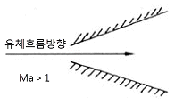
- dp＜0, dv＞0
- dp＞0, dv＜0
- dp＝0, dv＜0
- dv＝0, dp＞0
(정답률: 71%)
10. 공기 유동에서 수직충격파 직전의 마하수가 4.2라면 충격파 후의 마하수는? (단, 비열비는 1.4이다.)
- 0.34
- 0.43
- 4.54
- 4.64
(정답률: 50%)
11. 수직충격파(normal shock wave)에 대한 설명 중 옳지 않은 것은?
- 수직충격파는 아음속 유동에서 초음속 유동으로 바뀌어 갈 때 발생한다.
- 충격파를 가로지르는 유동은 등엔트로피 과정이 아니다.
- 수직충격파 발생 직후의 유동조건은 h-s선도로 나타낼 수 있다.
- 1차원 유동에서 일어날 수 있는 충격파는 오직 수직충격파뿐이다.
(정답률: 59%)
12. 압축성유체에 대한 설명 중 가장 올바른 것은?
- 가역과정동안 마찰로 인한 손실이 일어난다.
- 이상기체의 음속은 온도의 함수이다.
- 유체의 유속이 아음속(subsonic)일 때, Mach수는 1보다 크다.
- 온도가 일정할 때 이상기체의 압력은 밀도에 반비례한다.
(정답률: 62%)
13. 원관 중의 흐름이 층류일 경우 유량이 반경의 4제곱과 압력기울기(P1-P2)/L에 비례하고 점도에 반비례한다는 법칙은?
- Hagen-Poiseuille법칙
- Reynolds법칙
- Newton법칙
- Fourier법칙
(정답률: 77%)
14. 유체역학에서 다음과 같은 베르누이 방정식이 적용되는 조건이 아닌 것은?
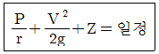
- 적용되는 임의의 두 점은 같은 유선상에 있다.
- 정상상태의 흐름이다.
- 마찰이 없는 흐름이다.
- 유체흐름 중 내부에너지 손실이 있는 흐름이다.
(정답률: 72%)
15. 유체가 지름 40㎜의 관과 50㎜관으로 구성된 동심 이중관 사이로 흐를 때의 수력학적 상당직경(hydraulic mean diameter) DH는?
- 10㎜
- 20㎜
- 25㎜
- 45㎜
(정답률: 50%)
16. 다음 중 용어에 대한 정의가 틀린 것은?
- 이상유체 : 점성이 없다고 가정한 비압축성 유체
- 뉴턴유체 : 전단응력이 속도구배에 비례하는 유체
- 표면장력계수 : 액체 표면상에서 작용하는 단위길이당 장력
- 동점성계수 : 절대점도와 유체압력의 비
(정답률: 65%)
17. 유체가 흐르는 배관 내에서 순간적으로 충격압을 만들고 소리를 내어 진동하는 현상을 나타내는 것은?
- 공동현상
- 서어징현상
- 워터해머 현상
- 숏피닝 현상
(정답률: 65%)
18. 원관을 통하여 계량수조에 10분 동안 2000㎏의 물을 이송한다. 원관의 내경을 500㎜로 할 때 평균 유속은 약 몇 ㎧인가? (단, 물의 비중은 1.0이다.)
- 0.27
- 0.027
- 0.17
- 0.017
(정답률: 43%)
19. 이상유체(ideal fluid)에 작용하지 않는 힘은?
- 마찰력 또는 전단응력
- 중력에 의한 힘
- 압력차에 의한 힘
- 관성력
(정답률: 65%)
20. 다음의 압축성 유체의 흐름 과정 중 등엔트로피 과정인 것은?
- 가역단열 과정
- 가역등온 과정
- 마찰이 있는 단열과정
- 마찰이 없는 비가역 과정
(정답률: 70%)
2과목: 연소공학
21. 어떤 고체연료의 조성은 탄소 71%, 산소 10%, 수소 3.8%, 황 3%, 수분 3%, 기타 성분 9.2%로 되어 있다. 이 연료의 고위발열량(㎉/㎏)은 얼마인가?
- 6698
- 6782
- 7103
- 7398
(정답률: 44%)
22. C3H8 1Nm3을 연소시킬 때 이론 건조 연소가스량(God)은 약 몇 Nm3인가?
- 21.8
- 23.8
- 25.8
- 27.8
(정답률: 40%)
23. 다음 중 비가역 과정이라고 할 수 있는 것은?
- Carnot 순환
- 노즐에서의 팽창
- 마찰이 없는 관내의 흐름
- 실린더 내에서의 급격한 팽창과정
(정답률: 57%)
24. 이상기체에 대한 단열온도상승은 열역학 단열압축식으로부터 계산될 수 있다. 다음 중 열역학 단열압축식이 바르게 표현된 것은? (단, Tf는 최종 절대온도, Ti는 처음 절대온도, Pf는 최종 절대압력, Pi는 처음 절대압력, r은 압축비이다.)
- Ti＝Tf(Pf/Pi)(r-1)/r
- Ti＝Tf(Pf/Pi)r/(t-r)
- Tf＝Ti(Pf/Pi)r/(r-1)
- Tf＝Ti(Pf/Pi)(r-1)/r
(정답률: 63%)
25. 프로판 및 메탄의 폭발하한계는 각각 2.5v%, 5.0v%이다. 프로판과 메탄이 4 : 1의 체적비로 있는 혼합가스의 폭발하한계는 약 몇 v%인가?
- 2.16
- 2.56
- 2.78
- 3.18
(정답률: 40%)
26. 프로판가스 1L를 완전연소하는데 필요한 이론산소량은 약 몇 g인가?
- 3
- 5
- 7
- 9
(정답률: 52%)
27. 열역학 제2법칙에 대한 설명으로 가장 거리가 먼 것은?
- 고립계에서의 모든 자발적 과정은 엔트로피가 증가하는 방향으로 진행된다.
- 열과 일 사이에 열이동의 방향성을 제시해 주는 법칙이다.
- 반응이 일어나는 속도를 알 수 있다.
- 주위에 어떤 변화를 주지 않고 열을 모두 일로 변환시켜 주기적으로 작동하는 기계를 만들 수 없다.
(정답률: 49%)
28. 수증기를 제거한 상태의 공기비를 바르게 나타낸 식은?
- 실제공기량/이론공기량
- 이론공기량/실제공기량
- (실제공기량/이론공기량)-1
- (이론공기량/실제공기량)＋1
(정답률: 66%)
29. 연소속도의 영향을 주는 요인으로 가장 저리가 먼 것은?
- 인화점
- 화염온도
- 반응계 온도
- 가연성물질의 종류
(정답률: 65%)
30. 폭발범위가 큰 것에서 작은 순서로 옳게 나열된 것은?
- 수소＞산화에틸렌＞메탄＞부탄
- 산화에틸렌＞수소＞메탄＞부탄
- 수소＞산화에틸렌＞부탄＞메탄
- 산화에틸렌＞수소＞부탄＞메탄
(정답률: 63%)
31. 냉동 싸이클에서 냉매의 온도 변화는 거의 없으면서 엔탈피가 증가하는 곳은?
- 압축기
- 증발기
- 냉각기
- 팽창밸브
(정답률: 51%)
32. 다음 중 연소의 3요소를 옳게 나열한 것은?
- 가연물, 빛, 열
- 가연물, 질소, 단열압축
- 가연물, 공기, 산소
- 가연물, 산소, 점화원
(정답률: 77%)
33. 방폭전기기기의 구조별 표시방법으로 틀린 것은?
- p-압력(壓力) 방폭구조
- o-안전증 방폭구조
- d-내압(耐壓) 방폭구조
- s-특수방폭구조
(정답률: 79%)
34. 건(조)도가 0이면 다음 중 어디에 해당하는가?
- 포화수
- 과열증기
- 습증기
- 건포화증기
(정답률: 56%)
35. 가스 안전성평가 기법은 정성적 기법과 정량적 기법으로 구분한다. 정량적 기법이 아닌 것은?
- 결함수 분석(FTA)
- 사건수 분석(ETA)
- 원인결과 분석(CCA)
- 위험과 운전분석(HAZOP)
(정답률: 79%)
36. 연소 시 공기비가 적을 경우 미치는 영향은?
- 매연 발생이 심해진다.
- 연소실 내의 연소온도가 낮아진다.
- 배기가스량이 많아져 배기가스에 의한 열손실이 증가한다.
- 연소가스 중에 NO2 등의 발생으로 대기오염을 초래한다.
(정답률: 51%)
37. 등심연소의 화염의 높이에 대하여 옳게 설명한 것은?
- 공기 유속이 낮을수록 화염의 높이는 커진다.
- 공기 온도가 낮을수록 화염의 높이는 커진다.
- 공기 유속이 낮을수록 화염의 높이는 낮아진다.
- 공기 유속이 높고 공기 온도가 높을수록 화염의 높이는 커진다.
(정답률: 61%)
38. 실린더 속에 N2가 0.5mol, O2가 0.2mol, H2가 0.3mol이 혼합되어 있을 때 전체의 압력이 1atm이었다면 이때 산소의 부분압력은 약 몇 mmHg인가?
- 152
- 179
- 182
- 194
(정답률: 46%)
39. 이상기체에 대한 설명으로 틀린 것은?
- 이상기체는 질량을 갖는다.
- 기체분자 자신의 부피는 없다.
- 기체분자 상호간에는 반발력이 작용하지 않는다.
- 이상기체는 특별한 조건에서 응축시키면 액화시킬 수 있다.
(정답률: 53%)
40. 오토 사이클의 열효율을 나타낸 식은? (단, η는 열효율, γ는 압축비, К는 비열비이다.)
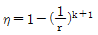
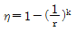
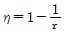
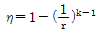
(정답률: 76%)
3과목: 가스설비
41. LNG, 액화산소, 액화질소 저장탱크 설비에 사용되는 단열재의 구비조건에 해당되지 않는 것은?
- 밀도가 클 것
- 열전도도가 작을 것
- 불연성 또는 난연성일 것
- 화학적으로 안정되고 반응성이 적을 것
(정답률: 74%)
42. 고압가스설비의 배관재료로서 내압부분에 사용해서는 안 되는 재료의 탄소 함량의 기준은?
- 0.35% 이상
- 0.35% 미만
- 0.5% 이상
- 0.5% 미만
(정답률: 58%)
43. 다음 중 가스 액화사이클이 아닌 것은?
- 린데 사이클
- 클라우드 사이클
- 필립스 사이클
- 오토 사이클
(정답률: 63%)
44. 펌프의 송출압력과 송출유량사이의 주기적인 변동이 일어나는 현상을 무엇이라 하는가?
- 공동 현상
- 수격 현상
- 서징 현상
- 캐비테이션 현상
(정답률: 70%)
45. 비열이 0.9㎉/㎏·℃인 액체 6000㎏을 30℃에서 50℃로 올리는데 몇 ㎏의 프로판이 소비되는가? (단, 프로판의 발열량은 12000㎉/㎏이다.)
- 8
- 9
- 10
- 11
(정답률: 60%)
46. 다음 중 가연성이면서 독성인 가스로만 나열된 것은?
- 염소, 시안화수소
- 산화질소, 수소
- 오존, 아세틸렌
- 일산화탄소, 암모니아
(정답률: 65%)
47. 가스홀더 유효가동량이 1일 송출량의 15%이고 송출량이 제조량보다 많아지는 17시~23시의 송출비율이 45%일 때 필요 제조능력(1일 환산)을 구하는 식은? (단, S＝가스 최대공급량이다.)
- 1.2S
- 1.5S
- 1.8S
- 2.1S
(정답률: 41%)
48. 다음 그림과 같은 펌프에 해당하는 것은?
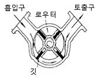
- 치차펌프
- 베인펌프
- 플런저펌프
- 웨스코펌프
(정답률: 73%)
49. 정상운전 중에 가연성가스의 점화원이 될 전기불꽃, 아크 또는 고온부분 등의 발생을 방지하기 위하여 기계적·전기적 구조상 또는 온도상승에 대하여 안전도를 증가시킨 방폭구조는?
- 내압방폭구조
- 압력방폭구조
- 유입방폭구조
- 안전증방폭구조
(정답률: 76%)
50. 액화천연가스 중 가장 많이 함유 되어있는 것은?
- 메탄
- 에탄
- 프로판
- 일산화탄소
(정답률: 75%)
51. 부탄가스 공급 또는 이송 시 가스 재액화 현상에 대한 대비가 필요한 방법(식)은?
- 공기 혼합 공급 방식
- 액송펌프를 이용한 이송법
- 압축기를 이용한 이송법
- 변성 가스 공급방식
(정답률: 67%)
52. 기화장치를 제조하고자 하는 자가 기화장치를 제조하기 위하여 반드시 갖추어야 할 설비를 모두 나열한 것은?
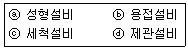
- ⓐ, ⓑ
- ⓐ, ⓑ, ⓒ
- ⓑ, ⓒ, ⓓ
- ⓐ, ⓑ, ⓒ, ⓓ
(정답률: 70%)
53. 도시가스 공급설비에서 저압배관 부분의 압력손실을 구하는 식은? (단, H : 기점과 종점과의 압력차[㎜H2O], Q : 가스유량[m3/hr], D : 구경[㎝], S : 가스의 비중, L : 배관길이[m], K : 유량계수이다.)
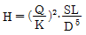
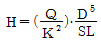
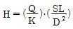
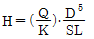
(정답률: 57%)
54. 다음 중 나프타의 접촉개질 장치의 주요 구성이 아닌 것은?
- 열교환기
- 예열로
- 기액분리기
- 수소화정제반응기
(정답률: 60%)
55. 고압가스 저장탱크 및 설비에 설치하는 안전장치에 대한 설명으로 옳은 것은?
- 릴리프밸브는 압축기 및 배관에 있어서 기체 증기의 압력상승을 방지하기 위하여 설치한다.
- 고압가스 저장탱크 설비 내 안전밸브는 액체의 압력상승을 방지하기 위하여 설치한다.
- 고압가스설비 내의 압력을 자동적으로 제어하는 자동압력제어장치는 다른 안전장치와 병행 설치한다.
- 파열판은 급격한 압력상승, 가연성가스 및 독성가스의 누출의 우려가 있는 경우에 안전밸브와 겸용하여 설치한다.
(정답률: 60%)
56. 산소가 없어도 자기분해 폭발을 일으킬 수 있는 가스가 아닌 것은?
- C2H2
- N2H4
- H2
- C2H4O
(정답률: 64%)
57. 도시가스 저장설비 중 지름 20m의 구형 가스홀더에 10㎏/cm2·G로 가스가 들어 있다. 이 가스를 홀더내압 2㎏/cm2·G까지 공급했을 때 공급한 가스량은 몇 Nm3인가? (단, 가스온도는 20℃로 일정하다.)
- 25800
- 28000
- 30200
- 32400
(정답률: 37%)
58. 하버-보시법에 의한 암모니아 합성 시 사용되는 촉매는 주 촉매로 산화철(Fe3O4)에 보조촉매를 사용한다. 보조촉매의 종류가 아닌 것은?
- K2O
- MgO
- Al2O3
- MnO
(정답률: 65%)
59. 펌프에서 발생하는 캐비테이션이나 수격작용을 방지하는 방법에 대한 설명 중 옳지 않은 것은?
- 캐비테이션을 방지하기 위해서는 펌프의 흡입양정을 작게 한다.
- 캐비테이션을 방지하기 위해서는 펌프의 설치위치를 낮춘다.
- 수격작용을 방지하기 위해서는 관내의 유속을 느리게 한다.
- 수격작용을 방지하기 위해서는 관경을 작게 한다.
(정답률: 71%)
60. 접촉분해 프로세스에서 다음 반응식에 의해 카본이 생성될 때 카본생성을 방지하는 방법은?
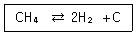
- 반응 온도를 낮게 반응 압력을 높게한다.
- 반응 온도를 높게 반응 압력을 낮게한다.
- 반응 온도와 반응 압력을 모두 낮게한다.
- 반응 온도와 반응 압력을 모두 높게한다.
(정답률: 67%)
4과목: 가스안전관리
61. 저장탱크의 긴급차단장치에 대한 설명으로 옳은 것은?
- 저장탱크의 주밸브와 겸용 사용할 수 있다.
- 저장탱크에 부착된 배관에는 긴급차단장치를 설치한다.
- 저장탱크의 외면으로부터 2m 이상 떨어진 곳에서 조작할 수 있어야 한다.
- 긴급차단장치는 방류둑 내측에 설치하여야 한다.
(정답률: 59%)
62. 다음 중 가연성 가스로만 나열된 것은?
- HCI, CH4, CO, CS2, H2S
- CH4, CO, CS2, H2S, NH3
- CH4, CO, SO2, NH3, NO
- HCI, NO, SO2, H2S, CH4
(정답률: 63%)
63. 도시가스사업자가 공급하는 도시가스의 연소성을 측정하려할 때 그 측정시간 및 위치를 지정하고 있다. 다음 중 법에서 요구하는 사항과 일치하는 것은?
- 매일 6시30분부터 9시 사이와 17시부터 20시30분 사이에 각각 1회씩 가스홀더 또는 압송기 출구에서 측정
- 매일 6시30분부터 9시 사이와 17시부터 20시 30분 사이에 각각 1회씩 배송기 출구에서 측정
- 매일 7시부터 9시 사이에 1회씩 가스홀더 또는 압송기 출구에서 측정
- 매일 7시부터 9시 사이에 1회씩 가스홀더 또는 배송기 출구에서 측정
(정답률: 62%)
64. 안전관리자가 상주하는 사무소와 현장사무소와의 사이 또는 현장사무소 상호간 신속히 통보할 수 있도록 통신시설을 갖추어야 하는데 이에 해당되지 않는 것은?
- 구내방송설비
- 메가폰
- 인터폰
- 페이징설비
(정답률: 71%)
65. 차량에 고정된 탱크의 운반기준에 대한 설명으로 옳지 않은 것은?
- 탱크의 정상부의 높이가 차량정상부의 높이보다 높을 경우에는 높이를 측정하는 기구를 설치한다.
- 후부취출식탱크 외의 탱크는 후면과 차량의 뒷범퍼와의 수평거리가 30㎝ 이상이 되도록 탱크를 차량에 고정시킨다.
- 충전관에는 안전밸브, 압력계 및 긴급탈압밸브를 설치한다.
- 탱크주밸브, 긴급차단장치에 속하는 밸브 그 밖의 중요한 부속품이 돌출된 저장탱크는 그 부속품을 차량의 우측면이 아닌 곳에 설치한 단단한 조작상자 내에 설치한다.
(정답률: 54%)
66. 건축물 내부에 설치된 도시가스사업자의 정압기로서 가스누출경보기와 연동하여 작동하는 기계 환기설비를 설치하고 몇 회 이상 안전점검을 실시하여야 하는가?
- 1일 1회 이상
- 1주 2회 이상
- 1월에 1회 이상
- 분기에 1회 이상
(정답률: 61%)
67. 액화석유가스 저장탱크 지하 설치시의 시설기준으로 틀린 것은?
- 저장탱크 주위 빈 공간에는 마른모래를 채운다.
- 저장탱크를 2개 이상 인접하여 설치하는 경우에는 상호간에 1m 이상의 거리를 유지한다.
- 지면으로부터 저장탱크 정상부까지의 깊이는 50㎝ 이상으로 한다.
- 저장탱크를 묻는 곳의 지상에는 경계표지를 한다.
(정답률: 63%)
68. 고압가스 용기를 취급 또는 보관하는 때에는 위해요소가 발생하지 않도록 관리하여야 한다. 용기보관장소에 충전용기를 보관하는 방법으로 옳지 않은 것은?
- 충전용기와 잔가스용기는 각각 구분하여 용기 보관장소에 놓아야 한다.
- 용기보관장소에는 계량기 등 작업에 필요한 물건 이외에는 두지 않아야 한다.
- 용기보관장소 주위 2m 이내에는 화기 또는 인화성 물질이나 발화성 물질을 두지 않아야 한다.
- 충전용기는 항상 60℃ 이하의 온도를 유지하고, 직사광선을 받지 않도록 하여야 한다.
(정답률: 76%)
69. 액화가스의 정의에 대하여 바르게 설명한 것은?
- 대기압에서의 비점이 섭씨 0도 이하인 것이다.
- 대기압에서의 비점이 상용의 온도 이상인 것이다.
- 가압, 냉각 등의 방법으로 액체 상태로 되어 있는 것이다.
- 일정한 압력으로 압축되어 있는 것이다.
(정답률: 67%)
70. 도시가스에 사용되는 폴리에틸렌 배관의 사용 압력이 0.4㎫인 경우 SDR(Standard Dimension Ratio) 값의 기준은?
- 11 이하
- 17 이하
- 21 이하
- 29 이하
(정답률: 37%)
71. 고압가스 특정설비 제조자의 수리범위에 해당하지 않는 것은?
- 단열재 교체
- 특정설비 몸체의 용접
- 특정설비의 부속품의 가공
- 아세틸렌용기 내의 다공물질 교체
(정답률: 67%)
72. 도시가스배관용 볼밸브 제조의 시설 및 기술 기준에 대한 설명 중 틀린 것은?
- 밸브의 오링과 패킹 등은 마모 등 이상이 없는 것으로 한다.
- 밸브의 개폐용 핸드 휠의 열림 방향은 시계바늘 방향으로 한다.
- 볼밸브는 핸들 끝에서 294.2N 이하의 힘을 가해서 900회전할 때에 완전해 개폐하는 구조로 한다.
- 나사식밸브 양끝의 나사축선에 대한 어긋남은 양끝면의 나사 중심을 연결하는 직선에 대하여 끝 면으로부터 300㎜ 거리에서 2.0㎜를 초과하지 아니하는 것으로 한다.
(정답률: 70%)
73. 다음 [보기]에서 임계온도가 0℃에서 40℃ 사이인 것으로만 나열된 것은?
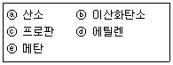
- ⓐ, ⓑ
- ⓑ, ⓒ
- ⓑ, ⓓ
- ⓒ, ⓔ
(정답률: 68%)
74. 프로판가스 폭발 시 폭발위력 및 격렬함 정도가 가장 크게 될 때 공기와의 혼합농도로 가장 옳은 것은?
- 2.2%
- 4.0%
- 9.5%
- 15.7%
(정답률: 60%)
75. 특정설비 중 고압가스용 압력용기의 재질이 주철인 경우 내압시험압력을 설계압력의 얼마로 하여야 하는가?
- 1.25배
- 1.5배
- 2배
- 3배
(정답률: 51%)
76. 고압가스설비에서 고압 배관의 상용압력이 0.5㎫일 때 기밀시험 압력의 기준은?
- 0.5㎫ 이상
- 0.7㎫ 이상
- 0.75㎫ 이상
- 1.0㎫ 이상
(정답률: 56%)
77. 고압가스제조시설에서 산소, 수소, 아세틸렌의 품질검사 기준에 대한 설명 중 틀린 것은?
- 품질검사는 안전관리원이 실시한다.
- 품질검사는 1일 1회 이상 가스제조장에서 실시한다.
- 검사결과는 안전관리부총괄자와 안전관리책임자가 함께 확인하고 서명 날인한다.
- 산소 용기 안의 가스충전압력이 35℃에서 11.8㎫ 이상이어야 한다.
(정답률: 57%)
78. “액화석유가스충전사업”의 용어 정의에 대하여 가장 바르게 설명한 것은?
- 저장시설에 저장된 액화석유가스를 용기 또는 차량에 고정된 탱크에 충전하여 공급하는 사업
- 액화석유가스를 일반의 수요에 따라 배관을 통하여 연료로 공급하는 사업
- 대량수요자에게 액화한 천연가스를 공급하는 사업
- 수요자에게 연료용 가스를 공급하는 사업
(정답률: 75%)
79. 다음 연소기의 분류 중 전가스소비량의 범위가 업무용 대형연소기에 속하는 것은?
- 전가스소비량이 6000㎉/h인 그릴
- 전가스소비량이 7000㎉/h인 밥솥
- 전가스소비량이 5000㎉/h인 오븐
- 전가스소비량이 14400㎉/h인 가스렌지
(정답률: 69%)
80. 최고충전압력 2.0㎫, 동체의 내경 65㎝인 산소용 강재 용접용기의 동판 두께는 약 몇 ㎜인가? (단, 재료의 인장강도 : 500N/mm2, 용접효율 : 100%, 부식여유 : 1㎜이다. )
- 2.30
- 6.25
- 8.30
- 10.25
(정답률: 55%)
5과목: 가스계측기기
81. 다음 중 가연성가스의 가스검출기에 해당하지 않는 것은?
- 안전등형
- 간섭계형
- 열선형
- 검지관형
(정답률: 52%)
82. 다음 유량계 중 직접법에 의해 측정하는 것은?
- 습식가스미터
- 오리피스미터
- 로터미터
- 피토관
(정답률: 56%)
83. 가스계량기의 설치 높이를 바르게 나타낸 것은?
- 건물내부의 2.5~3m 지점에 수평, 수직으로 설치
- 바닥으로부터 2~2.5m 이내에 수직, 수평으로 설치
- 건물외부의 1.5~2m 지점에 수평, 수직으로 설치
- 바닥으로부터 1.6~2m 이내에 수직, 수평으로 설치
(정답률: 71%)
84. 기체크로마토그래피에서 사용되는 캐리어가스에 대한 설명으로 틀린 것은?
- 헬륨, 질소가 주로 사용된다.
- 기체 확산이 가능한 큰 것이어야 한다.
- 시료에 대하여 불활성이어야 한다.
- 사용하는 검출기에 적합하여야 한다.
(정답률: 70%)
85. 게겔법에 의한 아세틸렌(C2H2)의 흡수액으로 옳은 것은?
- 87% H2SO4 용액
- 알칼리성 피로갈롤 용액
- 요오드수은칼륨 용액
- 암모니아성 염화제일구리 용액
(정답률: 63%)
86. 막식가스미터에서 계량막의 파손이나 밸브의 탈락, 밸브와 밸브시트 사이에서 누설이 있는 경우의 고장형태는?
- 부동
- 불통
- 누설
- 기차불량
(정답률: 47%)
87. 배관의 모든 조건이 같을 때 지름을 2배로 하면 체적유량은 몇 배가 되는가?
- 2배
- 4배
- 6배
- 8배
(정답률: 73%)
88. 기준가스미터 검사의 유효기간은 얼마인가?
- 1년
- 2년
- 3년
- 5년
(정답률: 62%)
89. 피토관은 측정이 간단하지만 사용 방법에 따라 오차가 발생하기 쉬우므로 주의가 필요하다. 이에 대한 설명으로 틀린 것은?
- 5㎧이하인 기체에는 적용하기 곤란하다.
- 흐름에 대하여 충분한 강도를 가져야 한다.
- 피토관 앞에는 관지름 2배 이상의 직관길이를 필요로 한다.
- 피토관 두부를 흐름의 방향에 대하여 평행으로 붙인다.
(정답률: 54%)
90. U자관 마노미터를 사용하여 오리피스에 걸리는 압력차를 측정하였다. 마노미터 속의 유체는 비중 13.6인 수은이며 오리피스를 통하여 흐르는 유체는 비중이 1인 물이다. 마노미터의 읽음이 40㎝일 때 오리피스에 걸리는 압력차는 약 몇 ㎏f/cm2인가?
- 0.⑤
- 0.30
- 0.5
- 1.86
(정답률: 41%)
91. 제백효과(Seebeck effect)를 이용한 온도계는?
- 열전대온도계
- 서모칼라온도계
- 광고온계
- 서미스터온도계
(정답률: 73%)
92. 액주형 압력계의 일반적인 특징에 대한 설명으로 옳은 것은?
- 구조가 복잡하다.
- 고장이 많다.
- 온도에 민감하다.
- 액체와 유리관의 오염으로 인한 오차가 발생하지 않는다.
(정답률: 65%)
93. 계측기기의 보존을 위해 취하여야 할 사항으로 가장 거리가 먼 것은?
- 예비부품, 예비계측기기의 상비
- 일반근무자의 관리교육
- 관리 자료의 정비
- 점검 및 수리
(정답률: 62%)
94. 스프링식 저울에 물체의 무게가 작용되어 스프링의 변위가 생기고 이에 따라 바늘의 변위가 생겨 물체의 무게를 지시하는 눈금으로 무게를 측정하는 방법을 무엇이라 하는가?
- 영위법
- 치환법
- 편위법
- 보상법
(정답률: 66%)
95. 측정자 자신의 산포 및 관측자의 오차와 시차 등 산포에 의하여 발생하는 오차는?
- 이론오차
- 개인오차
- 환경오차
- 우연오차
(정답률: 70%)
96. 어떤 관로의 벽에 구멍을 내고 측정한 압력이 정압으로 1000000Pa이었다. 이때 관로 내 기체의 유속이 100㎧인 지점의 전압은 약 몇 kPa인가? (단, 기체의 밀도는 1㎏/m3이다.)
- 10⑤
- 1010
- 1⑤0
- 1100
(정답률: 33%)
97. 다음 중 차압식 유량계가 아닌 것은?
- 오리피스
- 벤투리미터
- 플로노즐
- 피스톤식
(정답률: 62%)
98. 고온 물체로부터 방사되는 복사에너지는 온도가 높아지면 파장이 짧아진다. 이것을 이용한 온도계는?
- 열전대온도계
- 광고온계
- 서모컬러온도계
- 색온도계
(정답률: 46%)
99. 어떤 시료 가스크로마토그램에서 성분 A의 체류시간(t)이 10분이고, 피크 폭이 10mm이었다. 이 경우 성분 A에 대한 HETP(Height Equivalent to a Theoretical Plate)는 약 몇 mm인가? (단, 분리관의 길이는 2m이고, 기록지의 속도는 10mm/min이다.)
- 0.63
- 0.8
- 1.25
- 2.5
(정답률: 37%)
100. 다음 [보기]에서 설명하는 가스미터는?
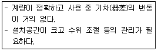
- 막식가스미터
- 습식가스미터
- 루트(Roots)미터
- 벤투리미터
(정답률: 69%)
= (압력강하 △P) / (밀도 ρ x 길이 ℓ x 체적유량 Q)
이는 유체역학에서 잘 알려진 무차원 수인 레이놀즈 수(Reynolds number)와 같은 형태를 가지고 있다. 따라서 정답은 ""이다.